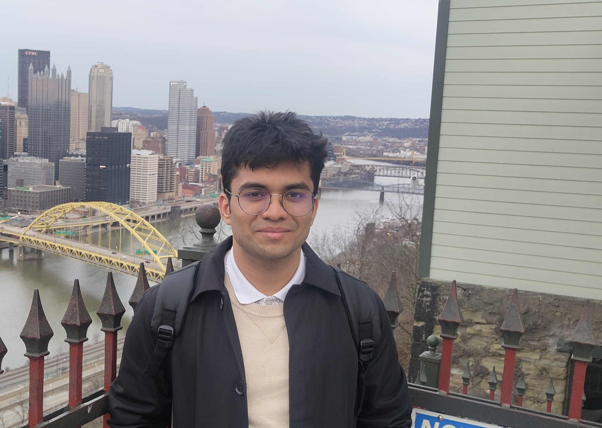

Researcher in ML Systems
I am a Research Fellow at Microsoft Research India, working with Jayashree Mohan and Ramachandran Ramjee on the AI Infrastructure team. My research is on ML systems, with a focus on LLM inference: request scheduling, serving efficiency, parallelism strategies, and the systems challenges that come with agentic workloads. I am also broadly interested in RL post-training and GPU kernel optimization.
I graduated from IIT Delhi in 2024 with a B.Tech in Electrical Engineering and a minor in Computer Science. I received PhD offers from CMU, UIUC, UW, UT Austin, and Georgia Tech. Right now, I am looking for opportunities to work on AI infrastructure.
QoServe: QoS-Aware LLM Inference Scheduling
📄 ASPLOS 2026 (full paper, 14.5% acceptance rate, 152/1048) | 🪧 SOSP 2025 (poster)
A QoS-aware scheduler for LLM inference that dynamically adapts request scheduling to achieve 32% higher throughput and 10× fewer SLO violations compared to state-of-the-art baselines.
Sutradhara: System Optimizations for Agentic Inference
🪧 EuroSys 2026 (poster) | Under review at ASPLOS 2027
Optimizing multi-turn agentic inference by overlapping system-prompt processing with tool execution, and scheduling for maximum intra- and inter-request KV cache reuse.
MMA-Net: Multi-Modal Radar–Lidar–Camera Fusion for Autonomous Driving
📄 ICASSP 2025
A transformer-based Bird's-Eye View fusion model integrating radar, lidar, and camera modalities for robust 3D object detection in autonomous driving scenarios.
B.Tech in Electrical Engineering + Minor in Computer Science
Indian Institute of Technology Delhi
2020 – 2024